Back to QuickBooks Portfolio

QuickBooks Cleanup
Professional QuickBooks Cleanup, Error Correction, Bank Register Review, Reconciliation Fixes, Audit Log Verification and Financial Accuracy.
Project Overview
This project demonstrates the complete QuickBooks Online Cleanup process. It includes reviewing bank transactions, identifying reconciliation differences, correcting opening balances, verifying bank register activity, using Audit Log to track accounting changes, and ensuring accurate financial records for reliable reporting.
Skills Used
- ✔ QuickBooks Cleanup
- ✔ Error Detection & Correction
- ✔ Bank Register Review
- ✔ Bank Reconciliation
- ✔ Opening Balance Correction
- ✔ Audit Log Verification
- ✔ Financial Accuracy
- ✔ QuickBooks Online
Project Screenshots
Project Screenshots
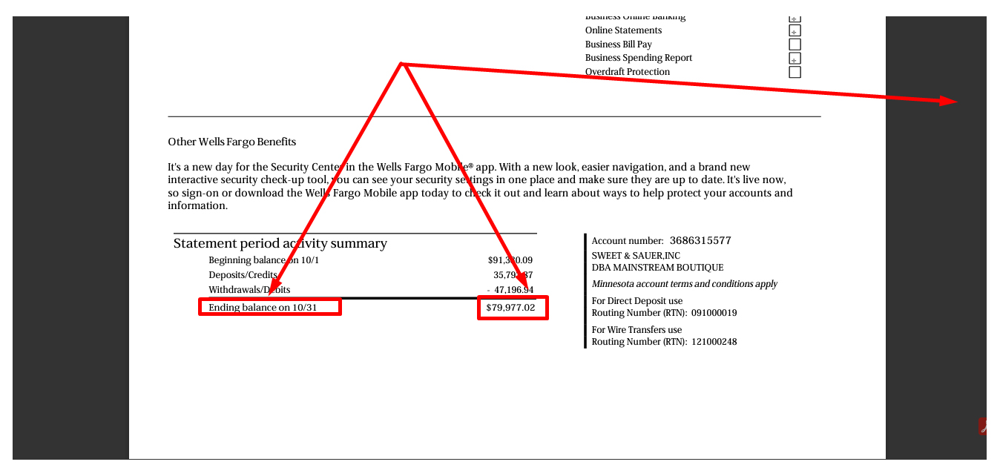
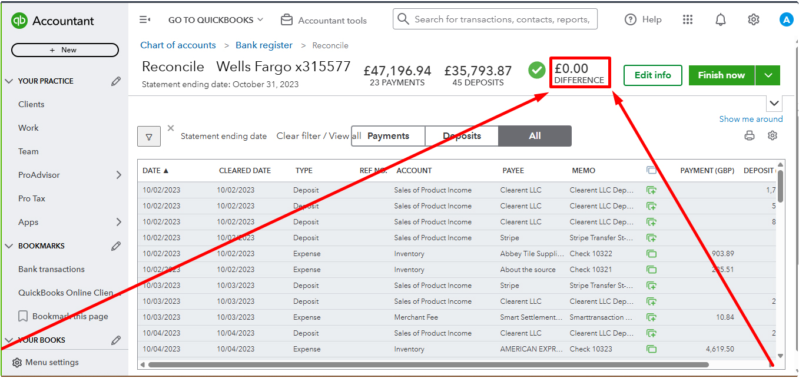
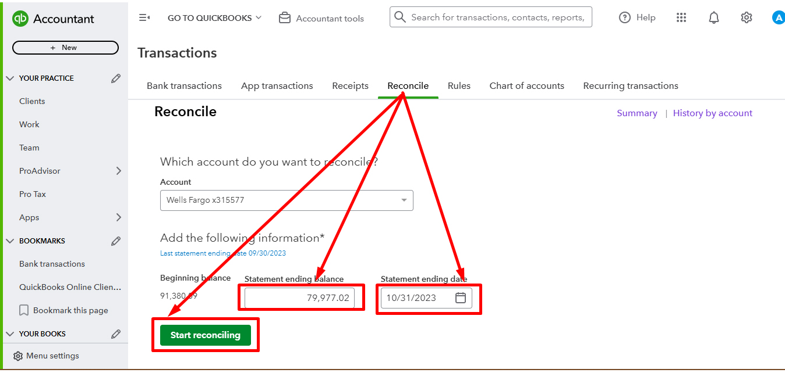
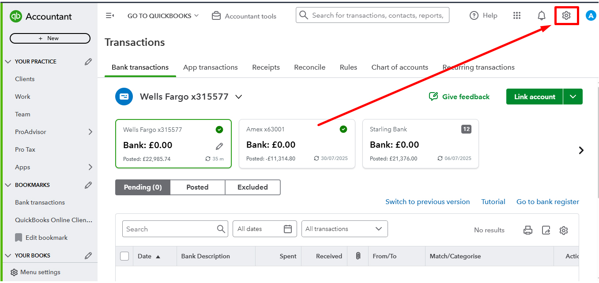
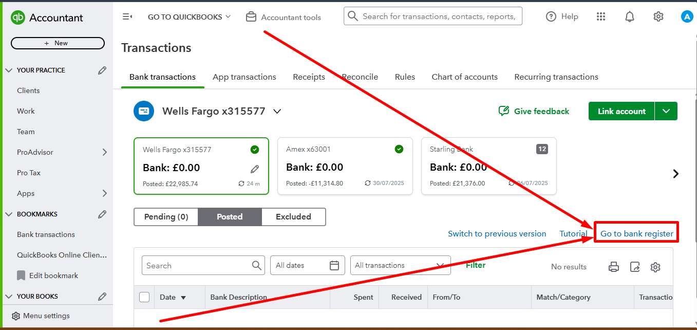
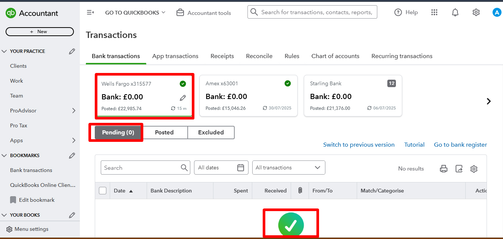
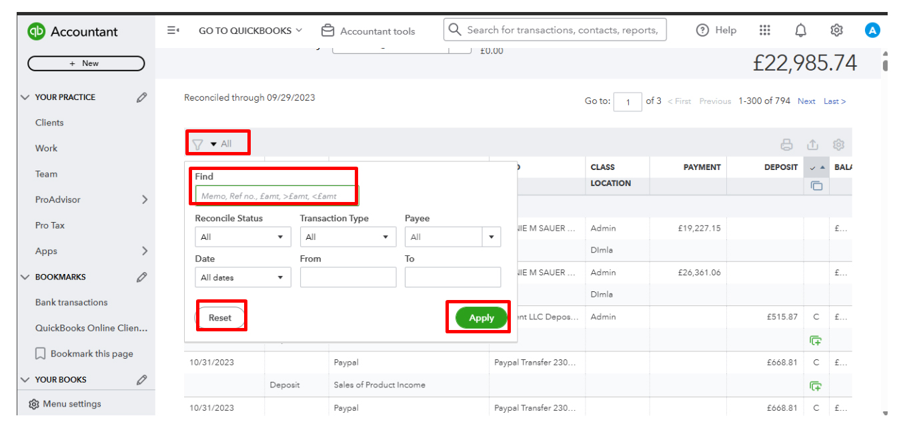
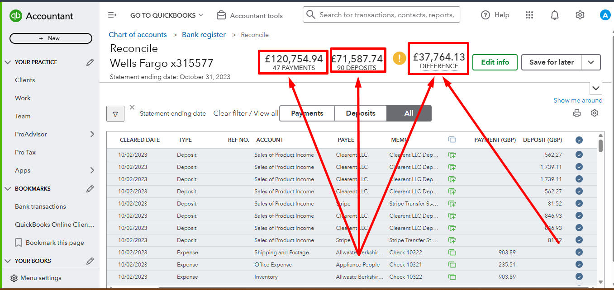
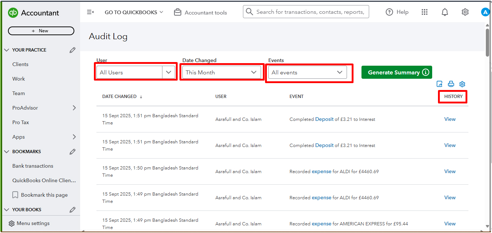
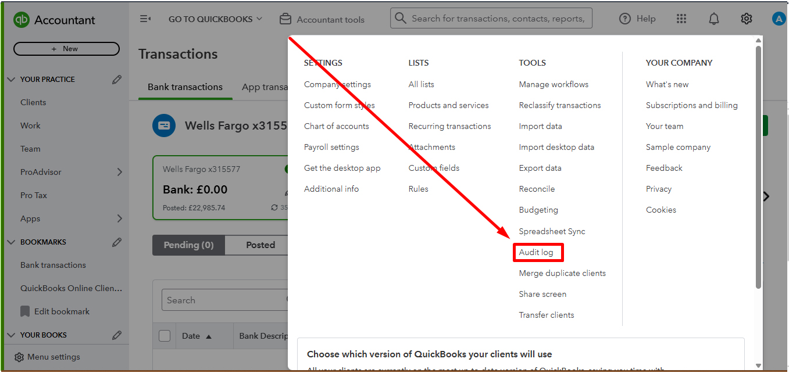
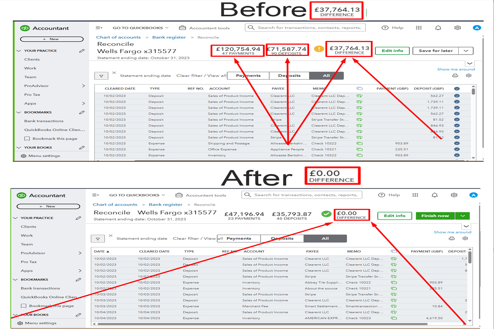